Study 22 · 6 October 2026
The sign, in Joyus
No cones, no plate. The sign on a spring stand, in the brand's colours, made of its stones four ways. Pick: D, the worker digging a pile of Joyus stones.
Open the page (move your mouse)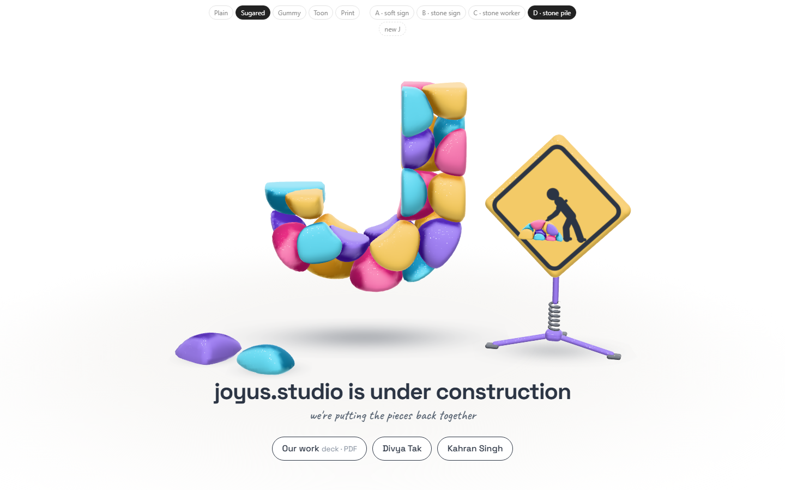
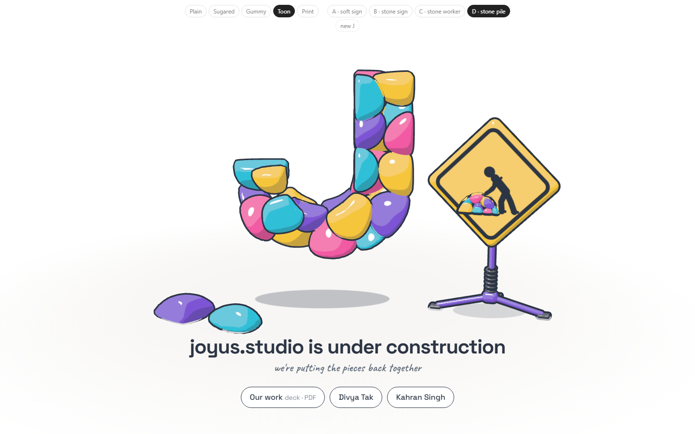
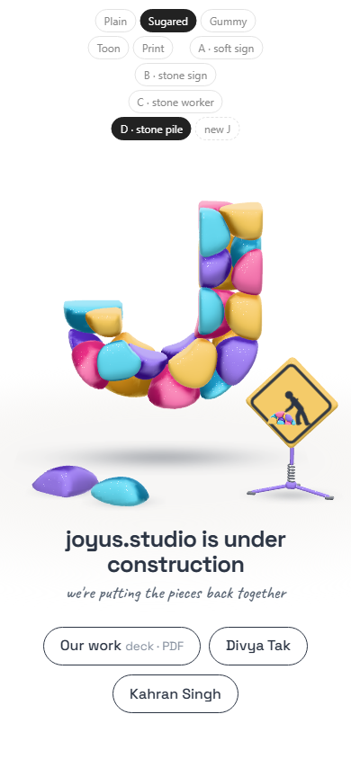
Four ways to make it of stones
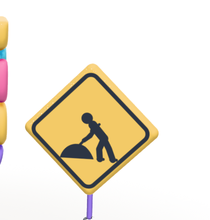
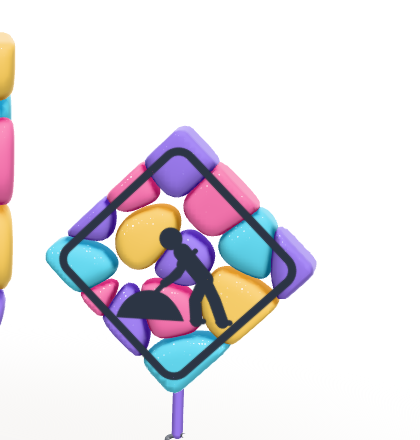
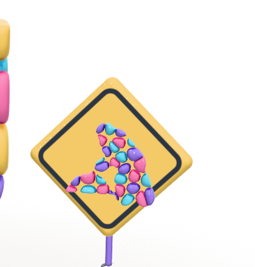
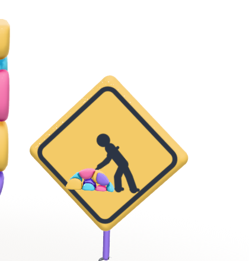
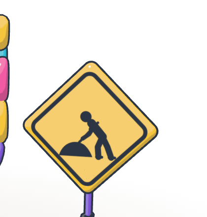
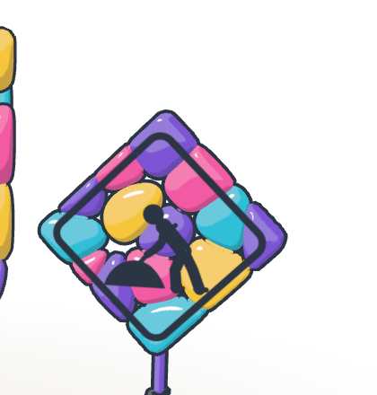
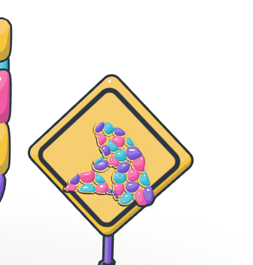
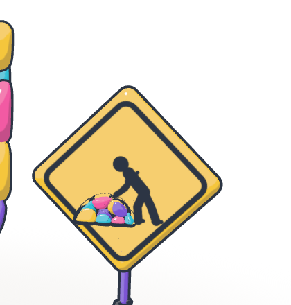
The stand: low, two legs out to the sides and one back, a coil spring, a short mast. Purple; ink for the spring and feet.
Wrong turns
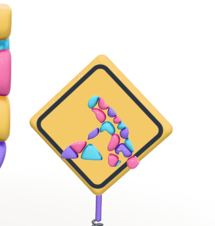
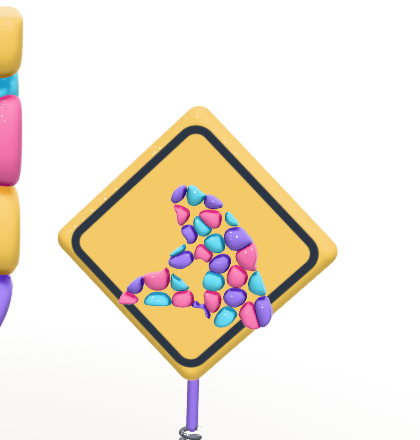
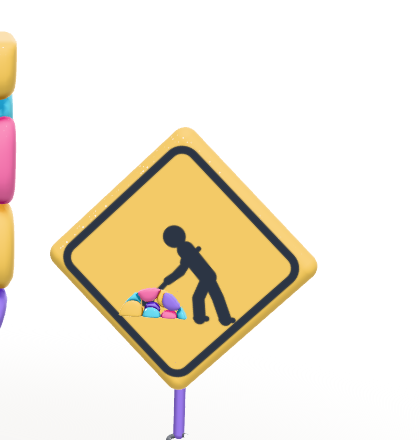
Open
- Which look? The headline still says "under construction"; the sign no longer does. Fine?
- Deck link, your site's address, homepage only or every page.
Test: page-test.mjs, 49 checks in a browser (the four signs build; the sign stands on the floor in all five looks; random Js; phone; reduced motion); read by check.cjs.